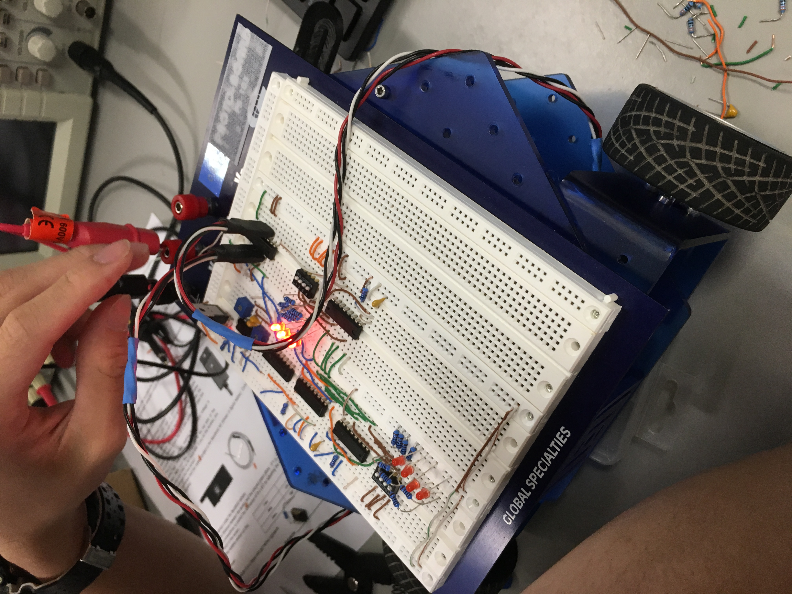

Robot-Controlled Vehicle
Embarking on a Journey of Robotics Innovation
As part of our project, we embarked on an exciting journey to create a robot vehicle equipped with advanced control circuits and sensors. Our goal was to design a versatile robot capable of navigating through a predefined course with precision and efficiency. Let me walk you through the details of our project and the process of bringing our robot to life.
Our endeavor began with a solid foundation in the fundamentals of robotics, which we gained through weeks of intensive coursework. We delved into topics ranging from basic components and electrical principles to advanced concepts like pulse-width modulation and logic design.
Throughout the course, we explored critical areas such as energy regulation, sensor integration, and sequential logic, each building upon the last to provide a comprehensive understanding of robot control systems. Hands-on lab sessions reinforced our theoretical knowledge, allowing us to apply principles learned in the classroom to real-world scenarios.
Building the Robot Vehicle
In our pursuit of creating a versatile robot vehicle, we meticulously assembled components and configured control circuits on a breadboard. At the heart of our design lay the Arduino Nano board, a powerful microcontroller that acted as the brain of our robot. We carefully integrated two light sensors onto the vehicle, strategically positioning them to perceive and interact with the environment effectively.
Building the Vehicle
The assembly process involved connecting various components such as the Arduino board, motor drivers, light sensors, and power source on the breadboard. Each component played a critical role in the robot's functionality, contributing to its ability to perceive and respond to its surroundings.

Configuring the Breadboard
Understanding the Light Sensors
A thorough understanding of light sensors was crucial for our robot to navigate autonomously. We incorporated line tracking sensors, allowing the robot to detect white lines on the demo mat guiding its movement along the predefined course. These sensors were connected to Arduino input terminals, facilitating real-time processing of sensor data for precise course tracking.

Light Sensors
Arduino Control Logic
Programming the Arduino board was fundamental to our robot's control system, enabling intelligent decision-making and motor control. We developed custom code to interpret sensor inputs and execute motor commands. Through logical decision-making and signal modulation, we ensured our robot could navigate the course autonomously with minimal intervention.
The Arduino acted as the central processing unit, continuously monitoring sensor inputs and executing predefined algorithms to govern the robot's behavior. It processed data from the line tracking sensors, determining the appropriate course of action based on predefined logic. Through conditional statements and feedback loops, we ensured the robot could adapt to dynamic environments and navigate complex courses. The Arduino controlled motor drivers, regulating speed and direction using pulse-width modulation signals, allowing the robot to traverse the course with stability.

Finalized Robot-Controlled Vehicle
Executing the Run
With our hardware and software components in place, we conducted multiple tests to ensure that the vehicle could sense the line on the ground and move accordingly. From powering up to reaching the end of the course, our robot executed each task with precision and accuracy, a testament to our meticulous design and programming efforts. However, we encountered challenges with the placement of the light sensors when navigating perfect perpendicular lines, requiring further adjustments and fine-tuning.
Conclusion:
Our project exemplifies the fusion of hardware and software to create a functional and efficient robot vehicle. Through meticulous design and programming, we successfully developed a robot capable of maneuvering through complex courses with ease. While we celebrate our achievements, we recognize that innovation is an ongoing process. As we continue to refine our design and explore new possibilities, we remain committed to pushing the boundaries of robotics and automation.
Reflecting on this journey, I must say that it has been an incredibly enjoyable experience delving into the world of hardware and building our robot vehicle. Throughout this process, I've gained invaluable insights and practical skills that have deepened my understanding of robotics. As we conclude this project, I'm excited to apply what I've learned to future endeavors, embracing the spirit of innovation and discovery in the realm of technology.